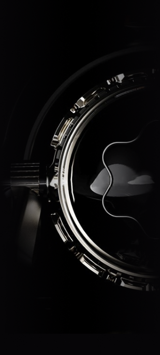
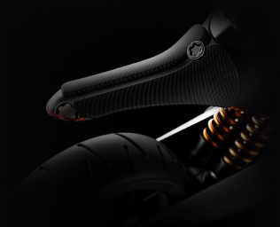

6-SPEED CONSTANT-MESH
169 MPH
272 KM/H
121 KW
162 HP
9.250 RPM
8,800 RPM
130.5 N M
96.3 LBF-FT
4.5 US GAL
17 L
3.7 IMP GAL
MY Ducati 848 EVO Corse SE is one of the most powerful machines from Borgo Panigale, and is packed full with race-grade parts and technologies, as well as a special paint and graphic scheme, which allow it to stand out in any crowd